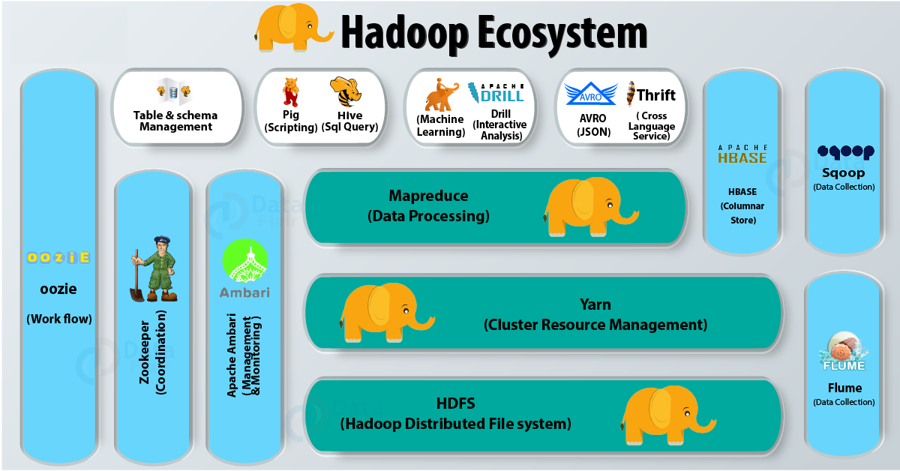

Chapter 5 Beyond the limits: distributed processing frameworks
Chapter objectives:
-
Understand distributed processing with examples of Spark, Hadoop, and
-
Understand the Hadoop ecosystem.
-
Understand the Spark ecosystem.
-
Run a data analysis task in Spark cluster.
In this chapter we will consider the very high limits of large-scale data processing. Processing and analyzing Big Data is extremely challenging for traditional data processing tools. We have already established that large datasets of this scale cannot be loaded into the RAM memory and sometimes cannot even fit in the storage of your computer; this is when distributed processing frameworks integrated with R , is an ideal solution.
Distributed processing frameworks like Hadoop, Spark or Flink are scalable for complex operations and tasks on large datasets but do not have strong statistical analytical capabilities. Fortunately implementing R in these frameworks provides highly scalable data analytics platform which can be scaled depending on the size of the dataset. This integration lets R run in parallel on large dataset as none of the data science libraries in R language will work on a dataset that is larger than its memory.
5.1 Introduction to Hadoop.
Hadoop is the technology to store massive datasets on a cluster of cheap machines in a distributed manner. It is an open-source software developed as a project by Apache Software Foundation. In the year 2008 Yahoo gave Hadoop to Apache Software Foundation. Since then two versions of Hadoop have been released Version 1.0 in the year 2011 and version 2.0.6 in the year 2013. Hadoop has also been compiled into various distributions like Cloudera, IBM BigInsight, MapR and Hortonworks.
The Hadoop architecture

At the core, we have HDFS for data storage, map-reduce for data processing and Yarn a resource manager. Then we have HIVE a data analysis tool, Pig – SQL like a scripting language, HBase – NoSQL database, Mahout – machine learning tool, Zookeeper – a synchronization tool, Oozie – workflow scheduler system, Sqoop – structured data importing and exporting utility, Flume – data transfer tool for unstructured and semi-structured data, Ambari – a tool for managing and securing Hadoop clusters, and lastly Avro – RPC, and data serialization framework.
RHadoop
RHadoop is a collection of five R packages that allow users to manage and analyze data with Hadoop. The packages have been tested (and always before a release) on recent releases of the Cloudera and Hortonworks Hadoop distributions and should have broad compatibility with open source Hadoop and mapR’s distribution. We normally test on recent Revolution R/Microsoft R and CentOS releases, but we expect all the RHadoop packages to work on a recent release of open source R and Linux.
RHadoop consists of the following packages:
rhdfs- This package provides basic connectivity to the Hadoop Distributed File System. R programmers can browse, read, write, and modify files stored in HDFS from within R. This package is only installed on the node that will run the R client.rhbase- This package provides basic connectivity to theHBASEdistributed database, using the Thrift server. R programmers can browse, read, write, and modify tables stored inHBASEfrom within R. This package is only installed on the node that will run the R client.plyrmr- This package enables the R user to perform common data manipulation operations, as found in popular packages such asplyrandreshape2, on very large data sets stored on Hadoop. Likermr, it relies on Hadoop MapReduce to perform its tasks, but it provides a familiar plyr-like interface while hiding many of the MapReduce details. This package should be installed on every node in the cluster.rmr2- This package allows R developer to perform statistical analysis in R via Hadoop MapReduce functionality on a Hadoop cluster. This package should be installed on every node in the cluster.ravro- This package adds the ability to read and writeavro filesfrom local and HDFS file system and adds an avro input format forrmr2. This package is only installed on the node that will run the R client.
Using R in Hadoop
Generally we have four options for building R to Hadoop integration using entirely open source stacks. It is worth while to note that there are other commercial options.
Option 1: Install R on workstations and connect to data in Hadoop.
This baseline approach’s greatest advantage is simplicity and cost. It’s free.
This approach uses open source packages like rhdfs and rhbase. This provides a simple way to directly ingest data from both the hdfs file system and the hbase database subsystems into Hadoop. Both connectors are part of the RHadoop package.
Optionally the RHive package executes Hive’s HQL SQL-like query language directly from R, and provides functions for retrieving metadata from Hive such as database names, table names, column names, etc.
Option 2: Install R on a shared server and connect to Hadoop.
Like option 1, R on a shared server can also leverage push-down capabilities of the rhbase and rhive packages to achieve parallelism and avoid data movement. However, as with workstations, the pushdown capabilities of rhive and rhbase are limited.
Option 3: Utilize Revolution R Open
Replacing the CRAN download of R with the R distribution: Revolution R Open (RRO) enhances performance further. It accelerates math computations using the Intel Math Kernel Libraries and is 100% compatible with the algorithms in CRAN and other repositories like BioConductor. No changes are required to R scripts, and the acceleration the MKL libraries offer varies from negligible to an order of magnitude for scripts making intensive use of certain math and linear algebra primitives. You can anticipate that RRO can double your average performance if you’re doing math operations in the language.
As with options 1 and 2, Revolution R Open can be used with connectors like rhdfs, and can connect and push work down into Hadoop through rhbase and rhive.
Option 4: Execute R inside of MapReduce using RMR2.
Limitations of rhbase and rhive push down method can be overcome by running R inside of Hadoop.
The open source RHadoop project includes rhdfs, rhbase and plyrmr and rmr2 packages. The rmr2 package enables R users to build Hadoop map and reduce operations using R functions. Using mappers, R functions are applied to all of the data blocks that compose an hdfs file, an hbase table or other data sets, and the results can be sent to a reducer, also an R function, for aggregation or analysis. All work is conducted inside of Hadoop but is built in R.
rmr2 is not the only option in this category – a similar package called rhipe is also and provides similar capabilities. rhipe is downloadable from GitHub.
5.2 Introduction to Spark.
Apache Spark is a general-purpose & lightning fast cluster computing platform. It is an open source, wide range data processing engine that enables streaming, machine learning or SQL workloads which demand repeated access to data sets.
It is designed in such a way that it integrates with all the Big data tools. Like spark can access any Hadoop data source, also can run on Hadoop clusters. Furthermore, Apache Spark extends Hadoop MapReduce to the next level. That also includes iterative queries and stream processing. Apache Spark offers high-level APIs to users, such as Java, Scala, Python, and R. Although, Spark is written in Scala still offers rich APIs in Scala, Java, Python, as well as R. We can say, it is a tool for running spark applications.
Most importantly, by comparing Spark with Hadoop, it is 100 times faster than Hadoop In-Memory mode and 10 times faster than Hadoop On-Disk mode.
Apache Spark Components
In this Apache Spark Tutorial, we discuss Spark Components. It puts the promise for faster data processing as well as easier development. It is only possible because of its components. All these Spark components resolved the issues that occurred while using Hadoop MapReduce.
Now let’s discuss each Spark Ecosystem Component one by one-
Spark Core Spark Core is a central point of Spark. Basically, it provides an execution platform for all the Spark applications. Moreover, to support a wide array of applications, Spark Provides a generalized platform.
Spark SQL On the top of Spark, Spark SQL enables users to run SQL/HQL queries. We can process structured as well as semi-structured data, by using Spark SQL. Moreover, it offers to run unmodified queries up to 100 times faster on existing deployments.
Spark Streaming Basically, across live streaming, Spark Streaming enables a powerful interactive and data analytics application. Moreover, the live streams are converted into micro-batches those are executed on top of spark core.
Spark MLlib Machine learning library delivers both efficiencies as well as the high-quality algorithms. Moreover, it is the hottest choice for a data scientist. Since it is capable of in-memory data processing, that improves the performance of iterative algorithm drastically.
SparkR Basically, to use Apache Spark from R. It is R package that gives light-weight frontend. Moreover, it allows data scientists to analyze large datasets. Also allows running jobs interactively on them from the R shell. Although, the main idea behind SparkR was to explore different techniques to integrate the usability of R with the scalability of Spark.
Spark GraphX Basically, Spark GraphX is the graph computation engine built on top of Apache Spark that enables to process graph data at scale.
5.3 Running R in Spark.
- Installing Java
I will hereby demonstrate how to setup Spark and run R within it, both as a stand alone and as a cluster.
Spark is built in the Scala programming language, which is run by the Java Virtual Machine (JVM), you also need to install Java 8 on your system. It is likely that your system already has Java installed, but you should still check the version and update or downgrade as described in Installing Java. You can use the following R command to check which version is installed on your system:
system("java -version")You can also use the JAVA_HOME environment variable to point to a specific Java version by running Sys.setenv(JAVA_HOME = “path-to-java-8”); either way, before moving on to installing sparklyr, make sure that Java 8 is the version available for R.
- Installing sparklyr
As with many other R packages, you can install sparklyr from CRAN as follows:
#install.packages("sparklyr")The examples in this book assume you are using the latest version of sparklyr. You can verify your version is as new as the one we are using by running the following:
packageVersion("sparklyr")## [1] '1.1.0'- Installing Spark
Start by loading sparklyr:
library(sparklyr)This makes all sparklyr functions available in R, which is really helpful; otherwise, you would need to run each sparklyr command prefixed with sparklyr::.
You can easily install Spark by running spark_install(). This downloads, installs, and configures the latest version of Spark locally on your computer; however, because we’ve written this book with Spark 2.3, you should also install this version to make sure that you can follow all the examples provided without any surprises:
spark_available_versions() # To check the versions available for instalation## spark
## 1 1.6
## 2 2.0
## 3 2.1
## 4 2.2
## 5 2.3
## 6 2.4spark_install("2.4") # You may install a specific version by altering that option
spark_installed_versions() # To check the installed verion## spark hadoop dir
## 1 2.4.3 2.7 /home/rstudio/spark/spark-2.4.3-bin-hadoop2.7
## 2 2.4.4 2.7 /home/rstudio/spark/spark-2.4.4-bin-hadoop2.7- Connecting
It’s important to mention that, so far, we’ve installed only a local Spark cluster. A local cluster is really helpful to get started, test code, and troubleshoot with ease. Later chapters explain where to find, install, and connect to real Spark clusters with many machines, but for the first few chapters, we focus on using local clusters.
The following are the recommended Spark properties to set when connecting via R:
sparklyr.cores.local - It defaults to using all of the available cores. Not a necessary property to set, unless there’s a reason to use less cores than available for a given Spark session.
sparklyr.shell.driver-memory - The limit is the amount of RAM available in the computer minus what would be needed for OS operations.
spark.memory.fraction - The default is set to 60% of the requested memory per executor. For more information, please see this Memory Management Overview page in the official Spark website
To connect to this local cluster, simply run the following:
library(sparklyr)
conf <- spark_config()
conf$`sparklyr.cores.local` <- 4
conf$`sparklyr.shell.driver-memory` <- "16G"
conf$spark.memory.fraction <- 0.9
sc <- spark_connect(master = "local",
version = "2.4",
config = conf)
#sc <- spark_connect(master = "local", version = "2.4")
#spark_web(sc)After a connection is established, spark_connect() retrieves an active Spark connection, which most code usually names sc; you will then make use of the connection to execute Spark commands.
- Using Spark
Now that you are connected, we can run a few simple commands. For instance, let’s start by copying the mtcars dataset into Apache Spark by using copy_to():
Reading data The data was copied into Spark, but we can access it from R using the data reference.
data<-read.csv("data3.csv")
data <- copy_to(sc, data)
data## # Source: spark<data> [?? x 5]
## mta_tax tip_amount tolls_amount improvement_surcharge total_amount
## <dbl> <dbl> <dbl> <dbl> <dbl>
## 1 0.5 0 0 0.3 21.8
## 2 0.5 0 0 0.3 36.3
## 3 0.5 5.05 0 0.3 25.4
## 4 0.5 0 0 0.3 8.3
## 5 0.5 2.45 0 0.3 14.8
## 6 0.5 0 0 0.3 55.3
## 7 0.5 0 0 0.3 10.3
## 8 0.5 11.7 5.76 0.3 70.3
## 9 0.5 3.36 0 0.3 20.2
## 10 0.5 0 0 0.3 5.8
## # … with more rowsYou have successfully connected and loaded your first dataset into Spark.
Let’s explain what’s going on in copy_to(). The first parameter, sc, gives the function a reference to the active Spark connection that was created earlier with spark_connect(). The second parameter specifies a dataset to load into Spark. Now, copy_to() returns a reference to the dataset in Spark, which R automatically prints. Whenever a Spark dataset is printed, Spark collects some of the records and displays them for you.
Simple analysis
When using Spark from R to analyze data, you can use SQL (Structured Query Language) or dplyr (a grammar of data manipulation). You can use SQL through the DBI package; for instance, to count how many records are available in our cars dataset, we can run the following:
library(DBI)
dbGetQuery(sc, "SELECT count(*) FROM data")## count(1)
## 1 713